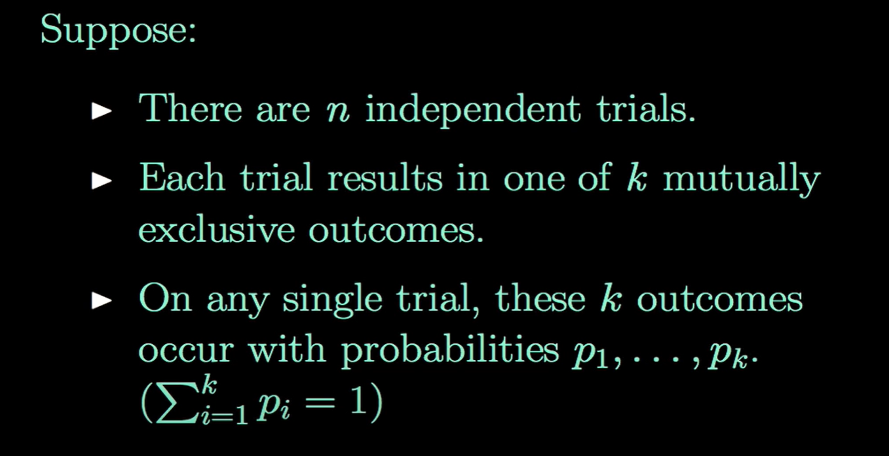
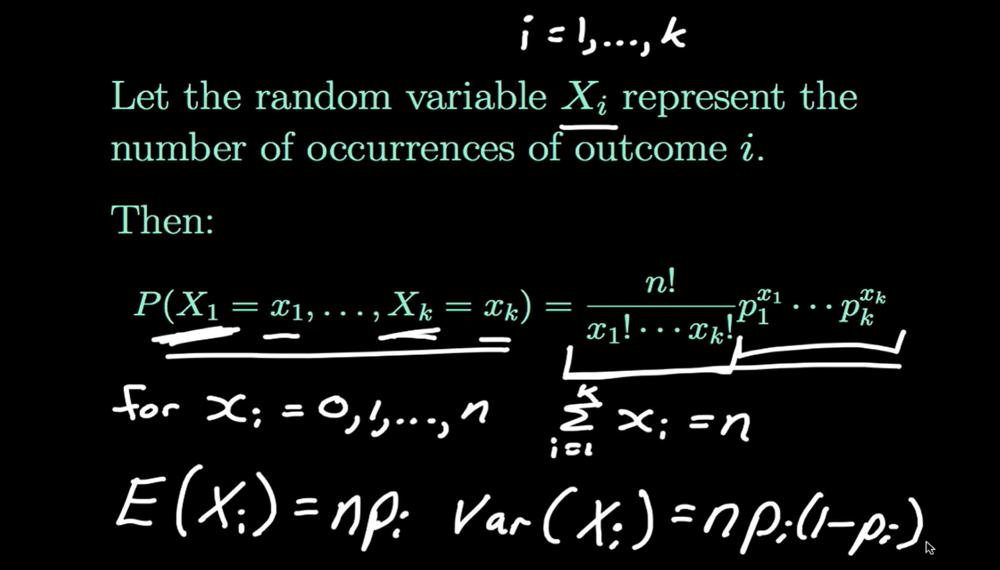
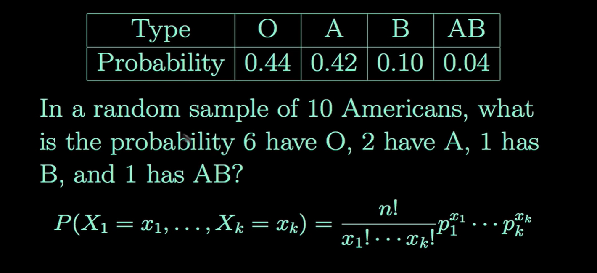
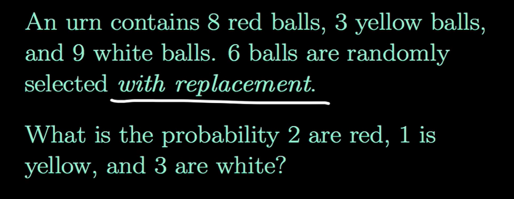
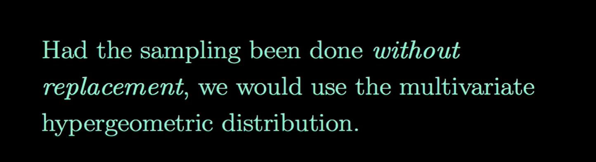
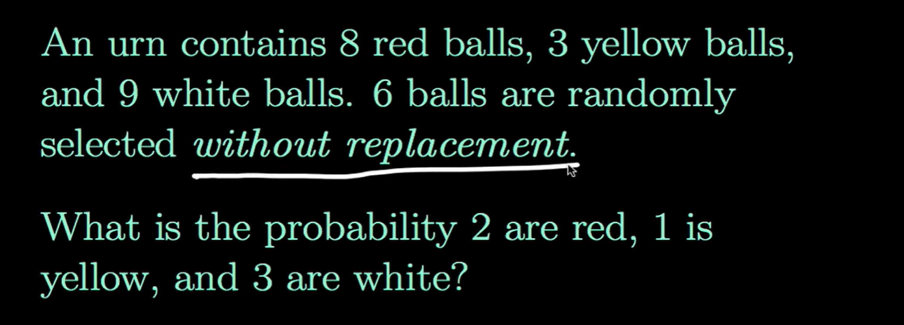

Discrete Probability Distribution
Multinomial Distribution
다항분포는 이항분포와 비슷하지만 각 시행에서 나올 수 있는 결과의 범주가 2개이상이다. 이항분포의 확장버전이라고 생각하면 된다.
가정

Pmf

예제1

\[P(X_1=6, X_2=2, X_3=1, X_4=1) = \frac{10!}{6!2!1!1!}(0.44)^6(0.42)^2(0.10)^1(0.04)^1 = 0.01290\]
예제2

\[P(X_1 = 2, X_2=1, X_3=3) = \frac{6!}{2!1!3!}\left(\frac{8}{20}\right)^2 \left(\frac{3}{20}\right)^1 \left(\frac{9}{20}\right)^3 = 0.13122\]
복원 추출이 아닌 경우

예제3 (Multivariate hypergeometric distribution)

복원추출이 아니라면, 더 이상 각 시행은 독립이 아니다.
\[P(X_1=2, X_2=1, X_3=3) = \frac{\binom{8}{2}\binom{3}{1}\binom{9}{3}}{\binom{20}{6}}=0.18204\]
- 분모: total number of possible samples
- 분자: total number of samples that get us what we want
예제4 (Conditional pmf) : 수업예제
\((X_1, X_2, X_3) \sim MULT(n, p_1,p_2,p_3)\)일 때 \(X_1|X_2=x_2\)의 조건부 확률밀도함수를 구하시오.
(sol)
(간단한 방법)
\[f_{X_1|X_2}(x_1|x_2) = \frac{f_{X_1,X_2}(x_1,x_2)}{f_{X_2}(x_2)}\]
step1
우리가 관심있는 사건은 \(X_1\)이라 한다면 관심없는 두 사건 \(X_2, X_3\)를 하나로 생각한다면, 관심있는 사건, 관심없는 사건 두가지의 결과로 이루어진 이항분포라고 할 수 있다.
- \(X_1 \sim B(n,p_1)\)
- \(X_2 \sim B(n,p_2)\)
step2
- 3가지 결과만 나오는 경우 \(X_1,X_2\)의 결합 pdf는 다음과 같이 정의할 수 있다. (\(X_1, X_2\)를 알면 자연스럽)게 \(X_3\)를 알 수 있다.
\[\begin{align*} f_{X_1,X_2}(x_1,x_2) &= P(X_1=x_2, X_2=x_2)\\ &= P(X_1=x_1, X_2=x_2, X_3 = n-x_1-x_2) \\ &= \frac{n!}{x_1!x_2!(n-x_1-x_2)!}p_1^{x_1}p_2^{x_2}p_3^{n-x_1-x_2}\end{align*}\]
step1에서 \(X_1\)과 \(X_2\)는 베르누이 시행을 독립적으로 \(n\)번 반복할 때 각 시행에서의 관심사건의 확률이 \(p_1, p_2\)인 이항분포를 따름을 알 수 있었다. 이를 이용하면 \(X_2\)의 marginal pdf를 구할 수 있다.
\[f_{X_2}(x_2) = \frac{n!}{x_2!(n-x_2)!}p_2^{x_2}(1-p_2)^{n-x_2}\]
step3
이전 단계에서 구한 \(X_1,X_2\)와 결합pdf와 \(X_2\)의 marginal pdf를 이용하면 \(X_1|X_2=x_2\)의 조건부확률밀도함수를 구할 수 있다.
\[\begin{align*}f_{X_1|X_2}(x_1|x_2) &= \frac{f_{X_1,X_2}(x_1,x_2)}{f_{X_2}(x_2)}\\ &= \frac{\frac{n!}{x_1!x_2!(n-x_1-x_2)!}p_1^{x_1}p_2^{x_2}p_3^{n-x_1-x_2}}{ \frac{n!}{x_2!(n-x_2)!}p_2^{x_2}(1-p_2)^{n-x_2}} \\ &= \frac{(n-x_2)!}{x_1!(n-x_1-x_2)!}\left(\frac{p_1}{1-p_2}\right)^{x_1}\left(\frac{p_3}{1-p_2}\right)^{n-x_1-x_2}\\ &=\frac{(n-x_2)!}{x_1!(n-x_1-x_2)!}\left(\frac{p_1}{1-p_2}\right)^{x_1}\left(1-\frac{p_1}{1-p_2}\right)^{n-x_1-x_2}\\ &= \binom{n-x_2}{x_1}\left(\frac{p_1}{1-p_2}\right)^{x_1} \left(1-\frac{p_1}{1-p_2}\right)^{n-x_1-x_2}\\ &\sim B\left(n-x_2, \frac{p_1}{1-p_2}\right) \end{align*}\]